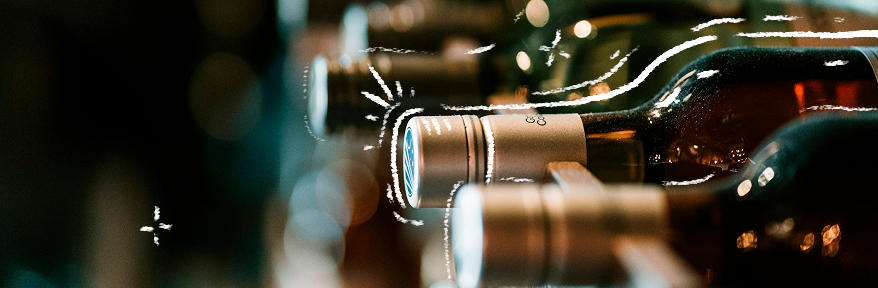

VORES VINERI
Velkommen til Havblink, vores lille vinhjerte i det nordlige Danmark.
Vi startede vingården i midten af 2017 med en drøm om at skabe noget ægte, bæredygtigt og dansk.
Vin har altid været noget særligt for os, og vi ønskede at bidrage med et produkt, der både tager hensyn til naturen og emmer af håndværk.
Alt hos os er lavet i hånden, fra vinstokken til flasken, fordi vi mener, at man kan smage forskellen, når der er lagt kærlighed og personlighed i hver eneste dråbe.
Vores vin skal være en del af danskernes hygge, den lune sommeraften på terrassen eller det lille lysglimt af sol midt i vintermørket.
Hos os er vin ikke bare en drink, det er en følelse, og den vil vi gerne dele med jer.
HAVBLINK FAMILIEN
Vi er en lille gruppe venner med en stor kærlighed til naturen, håndværket og de øjeblikke, man deler med dem, man holder af.
Vores rejse begyndte med nysgerrigheden på, om man virkelig kunne lave god vin i Danmark, og med hver vores baggrund, én med hænderne dybt forankret i landbruget og én med et kreativt blik for detaljen, kastede vi os ud i det.
Det blev hurtigt klart for os, at vin kunne noget helt særligt, også her i det nordjyske.
Vi har altid båret på minderne fra vores rejser rundt i verden, og drømmen var at skabe noget, der kunne bringe den samme varme og glæde videre.
For os handler vin ikke bare om smag, det handler om at være sammen, skabe nye minder og nyde de stille stunder i godt selskab.